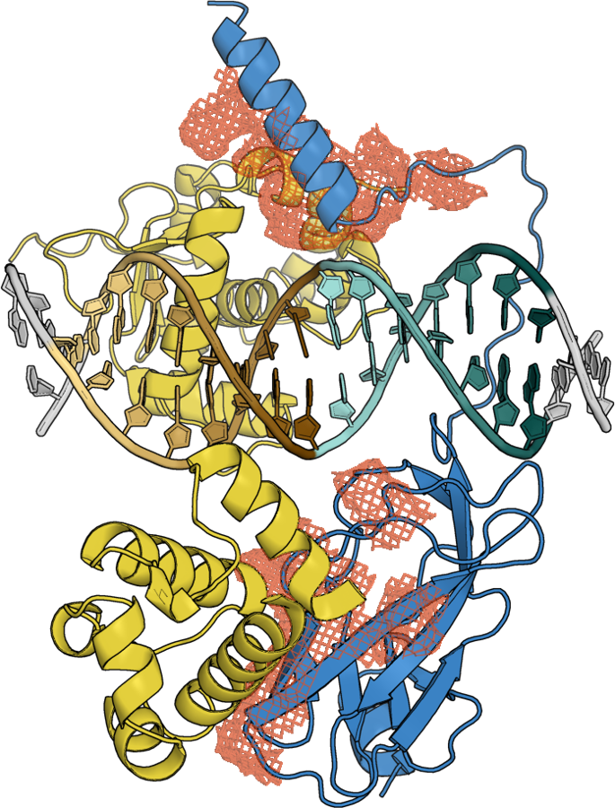
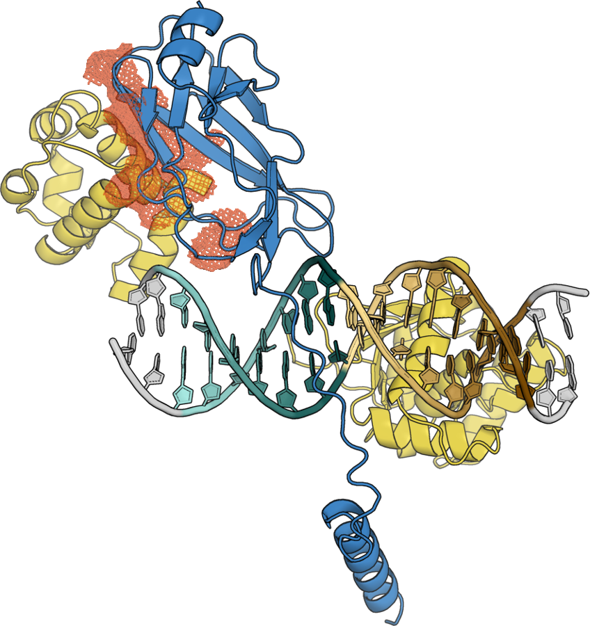
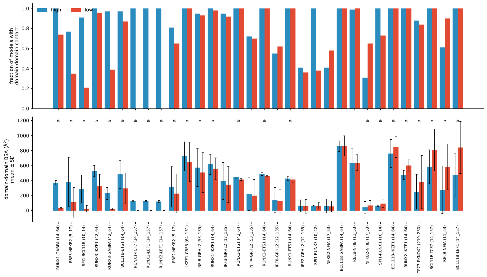
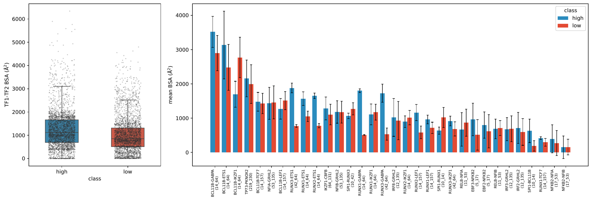
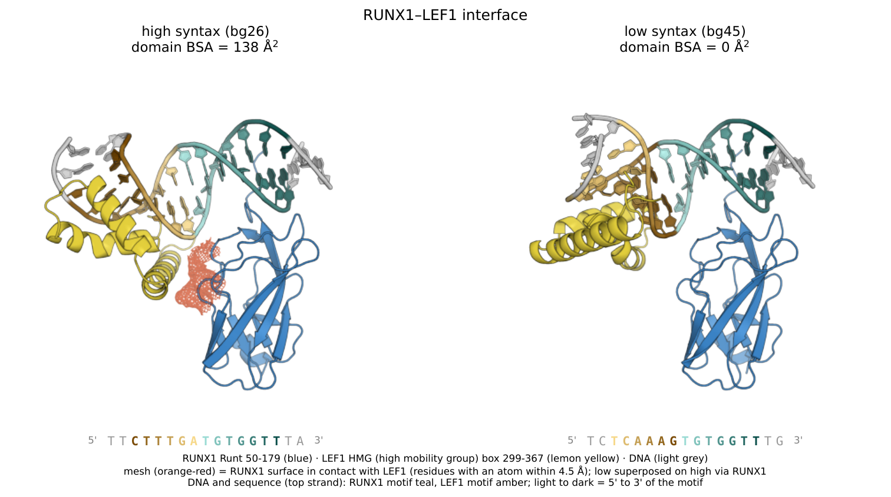
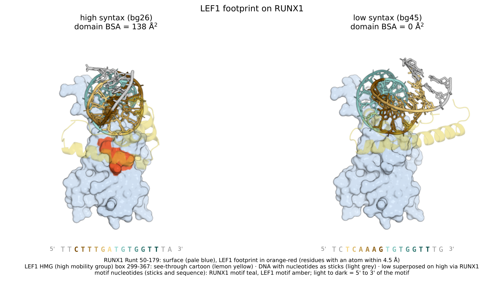
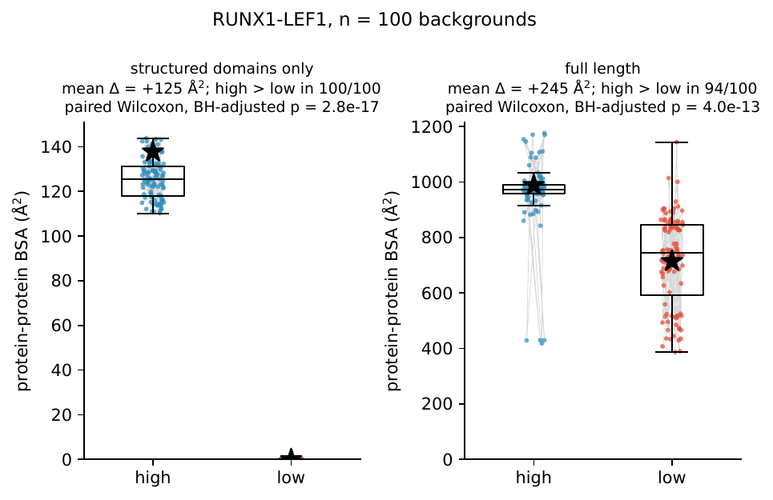
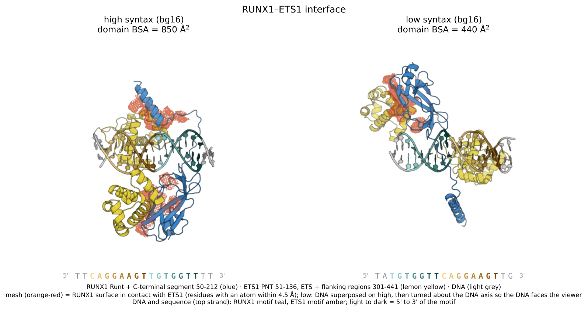
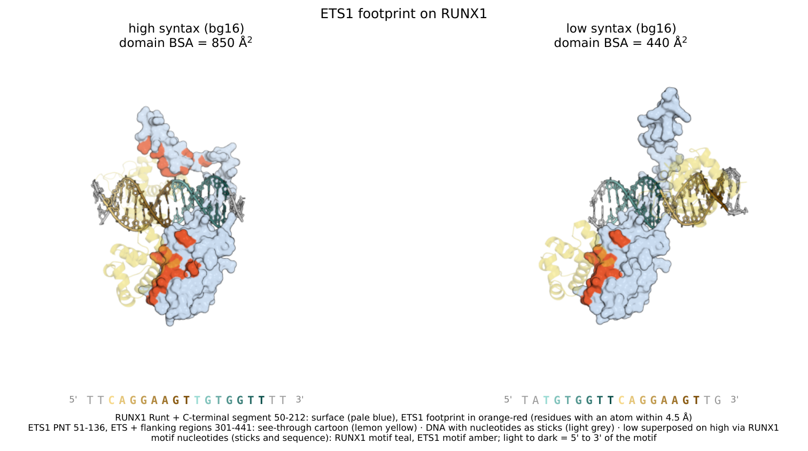
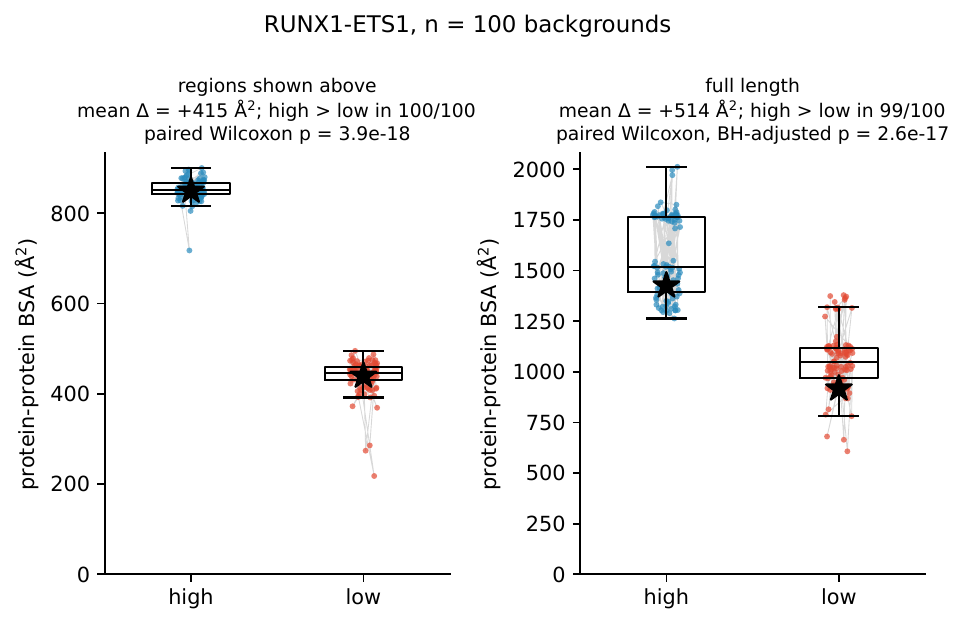

AlphaFold 3 screen · work in progress
Does motif arrangement change how two transcription factors touch?
We modelled 6,400 complexes of two transcription factors on DNA. Each pair was placed on the same two motifs in a favourable ("high syntax") and an unfavourable ("low syntax") arrangement, and we asked whether the proteins contact each other differently.


RUNX1 (blue) and ETS1 (yellow) on DNA. The same two motifs, RUNX and ETS, in swapped order. Orange mesh marks where ETS1 touches RUNX1; high has two contacts, low only one.
Approach
Same proteins, same motifs, different arrangement
Transcription factors often bind DNA in pairs, and the order, orientation and spacing of their two motifs (the motif "syntax") can decide whether a sequence is active. One explanation is structural: only some arrangements let the two proteins contact each other on the DNA.
To test this, each TF pair was modelled on short double-stranded DNA carrying its two motifs in a high-scoring and a low-scoring arrangement, as ranked with tangermeme. Each arrangement was embedded in 100 different flanking sequences, so every high model has a matched low model with the same background.
- Pick sequences32 TF pairs × high / low syntax × 100 backgrounds.
- Predict structuresFull-length TF1 + TF2 + DNA duplex with AlphaFold 3, one model per sequence.
- Measure contactProtein–protein buried surface area (BSA), full length and structured domains only.
- Compare pairsPaired Wilcoxon test per TF pair, matched by background, with FDR correction across the 32 pairs.
Result 1 · the whole screen
High syntax buries more protein surface overall, but not for every pair
Across all models, the high-syntax arrangement gives a larger protein–protein interface. Pair by pair the picture is mixed: half of the pairs follow the expectation, and a quarter go the other way.




The cleanest cases are on/off. For RUNX1–LEF1, RUNX1–TCF7 and RUNX2–LEF1, the domains touch in every high-syntax model and in none of the low-syntax ones.
Result 2 · an on/off pair
RUNX1–LEF1: a small contact that exists only in the high arrangement
In the high-syntax arrangement the end of a LEF1 HMG-box helix rests against one face of the RUNX1 Runt domain. In the low-syntax arrangement both proteins still sit on their motifs, but LEF1 is turned away and the domains do not meet.






Result 3 · a known interface
RUNX1–ETS1: the syntax-dependent contact sits just outside the annotated domains
With curated domain boundaries, RUNX1–ETS1 looked almost identical in high and low (a difference of 12 Ų), while the full-length proteins differed by more than 500 Ų. Splitting the buried surface by region showed where the difference comes from: a short RUNX1 segment directly after the Runt domain (about residues 191–205) packs against the regions flanking the ETS1 ETS domain, and it does so only in the high-syntax arrangement.
The same RUNX1 segment makes the RUNX1–ETS1 contact in the crystal structure of the two proteins on DNA (PDB 4L0Z, Shrivastava et al., 2014).
| RUNX1 residues touching ETS1 | ETS1 residues touching RUNX1 | |
|---|---|---|
| Crystal structure 4L0Z | 194, 197, 198, 201, 202, 206 | 334–343 and 422–432 |
| High-syntax models in at least 30% of models | 194, 195, 197, 198, 201, 202, 205 | 304, 326–330, 338, 399–400, 416–421 |
The RUNX1 side matches the crystal closely. On the ETS1 side the models place the segment on the same flanks of the ETS domain, shifted by a few residues. When the regions are widened to include this interface (RUNX1 50–212; ETS1 PNT domain plus ETS domain with flanks, 301–441), the pair becomes a clear high-versus-low contrast.






Read with care
What these models can and cannot tell us
Reproduce
Code, tables and figures
The repository holds the SLURM pipeline, the analysis notebooks, the input sequence table, the result tables and the PDF figures. The 6,400 model files are too large for git and are kept on the cluster.
# structures (HPC): edit paths and SLURM account in config.sh, then cd af3_screen_n100_rho0.6 && ./submit_all.sh # domain annotations and domain-only BSA python scripts/fetch_tf_domains.py sbatch scripts/domain_bsa.sbatch # analysis: run the notebooks in notebooks/ in numerical order
- 0 Protein–protein BSA and ipTM · full length
- 1–2 Protein–DNA interface and contacts
- 3 Inter-chain PAE
- 4, 4b Representative structures · RUNX1–LEF1, RUNX1–ETS1
- 6 RUNX1–ETS1 against the 4L0Z crystal structure
- scripts/ Domain annotations, domain-only BSA, notebook and site generators